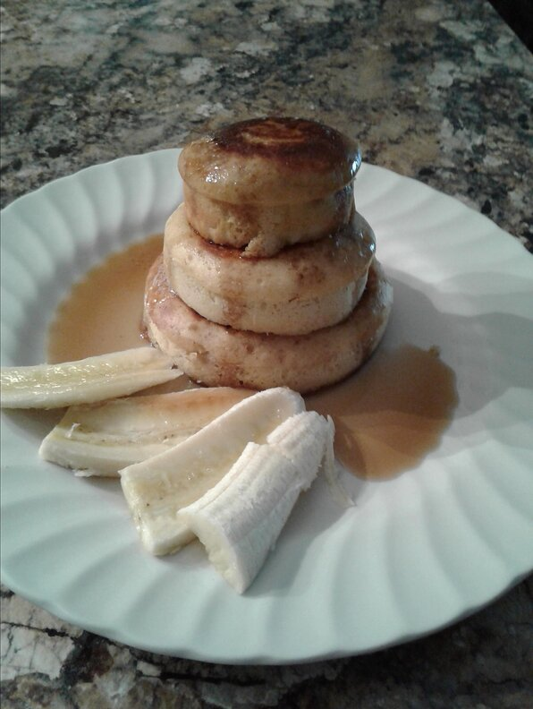

Fluffy Japanese Pancakes

Fluffy Japanese pancakes. These impressively tall pancakes are great with maple syrup!
Ingredients
- 2 eggs, separated
- 1 ½ cups all-purpose flour
- ¼ cup white sugar
- 2 teaspoons baking powder
- ½ teaspoon baking soda
- 1 ¼ cups buttermilk
- ¼ cup melted butter
- ½ teaspoon vanilla extract
Steps
- Beat egg whites in a glass, metal, or ceramic bowl until stiff peaks form.
- Butter enough 3 1/2-inch ring molds to fill your frying pan. Place molds in the pan over low heat. Cover.
- Mix flour, sugar, baking powder, and baking soda in a bowl.
- Combine buttermilk, egg yolks, butter, and vanilla extract in a separate bowl. Add the flour mixture and stir until batter is fairly smooth.
- Fold egg whites into the batter until combined. Small bits of egg whites still showing is ok.
- Pour about 1/2 cup of batter into each mold and cover the pan. Cook until bubbles start forming at the top, about 5 minutes. Flip pancakes in their molds and cook until set, 3 to 4 minutes more.